March 2031 · A Tuesday morning
The third-floor office of the Harwick University physics building has not changed in four hours. Same desk. Same lamp, amber, narrow. Same three monitors, two of them dark. Same cold coffee going colder in a mug that says WORLD'S WORST BOSS, a gift from a student that Oscar has kept because he finds it genuinely funny every single morning.
DR. OSCAR ADKINS. 28. American. Chicago-born, Edinburgh-tenured since twenty-six. One hand pressed flat to his temple. The other moving a pen across a yellow legal pad in the unhurried automatic way of someone who is not writing but thinking, using the hand to stop the mind from running too far ahead.
His wedding ring, a thin plain band of gold, catches the light every time he writes. He doesn't notice. He hasn't noticed in four years.
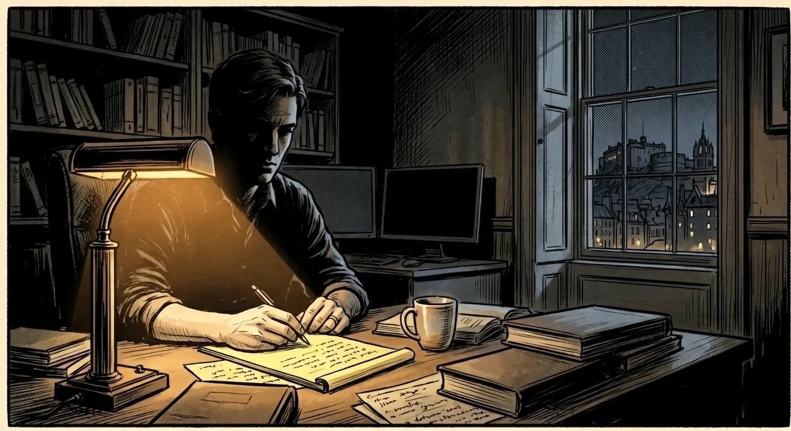
He doesn't look up.
A pause. Precisely long enough to make a point. Then her phone, extended into the room.
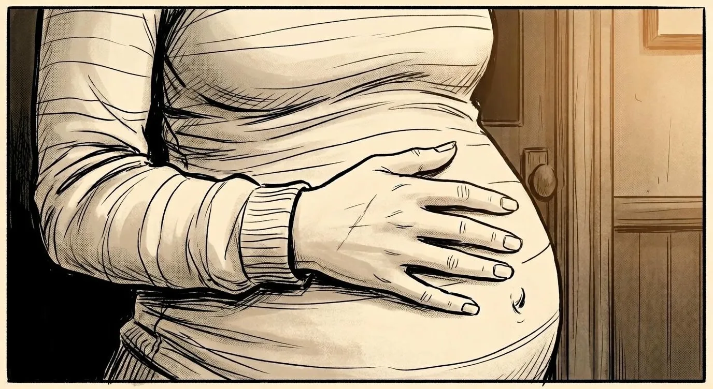
One hand on the curve. Unpainted nails. A thin white scar along the index finger. No caption. None needed.
He looks up. Finally. And produces, automatically, privately, the smile he keeps for no one else on earth.
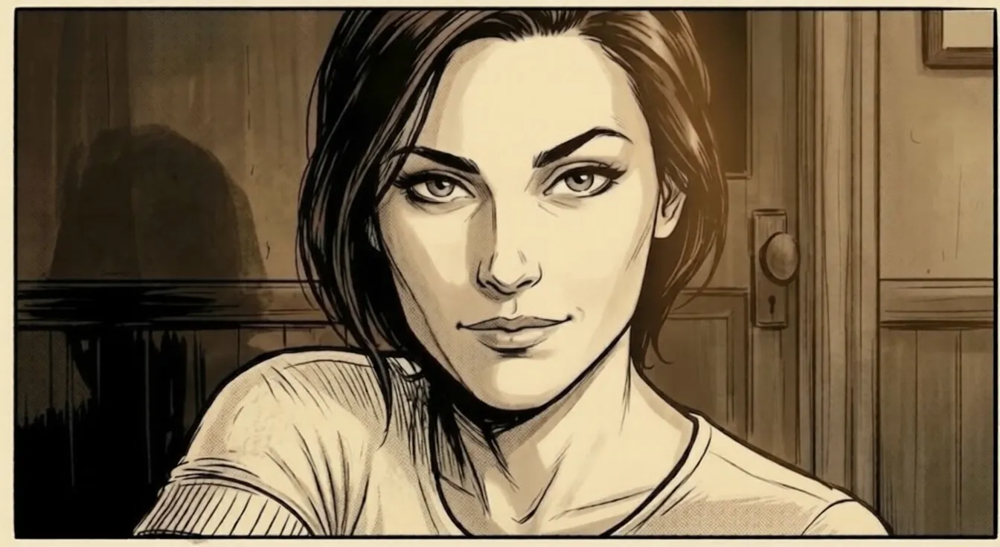
FELICIA ADKINS. 28. Barefoot. Holding a mug of decaf. Eight months pregnant and carrying herself with the kind of quiet authority that has nothing to do with how loud you speak. Until eight months ago she worked for British intelligence, a unit so classified it has no public name and does not put its people's names anywhere a computer can find them. She is also one month older than Oscar. She has mentioned this forty-seven times.
One eyebrow raised just far enough to say: I have already won this conversation. You just haven't been told yet.
She crosses the room. Sits in his lap without asking, as though the chair was always built for two. One hand on her bump. The other on his cheek.
She reaches over. Closes the notepad. Closes the laptop. Looks at him straight on, the way she looks at things she has already decided about.
He sighs. She kisses him, soft and unhurried, the kind of kiss that is also a verdict. Then she stands, smooths her dress, and walks to the door with the measured calm of someone who has spent years walking into rooms that might be dangerous and always walking out on her own terms.
She does not look back.
Her footsteps in the corridor. Gone.
He sits in the quiet she has left behind. Looks at the closed notepad. Looks at the ceiling. Lets out a long breath that has, in roughly equal measure: love, defeat, and something close to gratitude.
The lamp stays on. The notepad stays closed. Outside the tall window, Edinburgh in November has started building clouds, heavy and grey, rolling in from the water with no hurry. The kind that don't threaten. They just arrive, and stay, and make the city feel smaller.
She is ready before him. This is how it always goes.
Burgundy dress. Eight months along, and carrying it with more grace than she expected. She waits in the hallway with one hand on her bump, talking to it quietly, not baby talk but proper conversation, low and even, the way she has been doing for weeks.
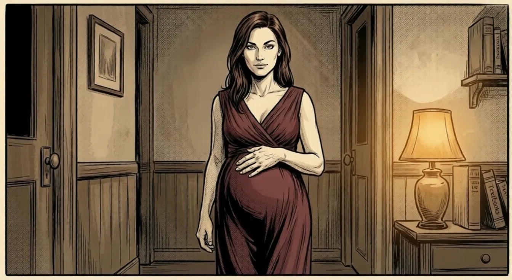
He comes out in his blazer, collar slightly off. She crosses to him without being asked. Fixes the collar with both hands. Slow and deliberate, the way you do something you have done a thousand times and plan to do a thousand more.
She laughs, rare and real and completely unguarded, and folds herself against his chest. As hard as she was with the rest of the world, she was exactly that soft with him. She let herself be held for eleven seconds. He knew better than to count out loud.
Before the car, before the rain, before everything that comes next, she stands at the bathroom mirror for one last moment. The dress. The bump. The small scar on her index finger. The earring that has always been just hers.
And somewhere in that quiet, her mind does what minds do when the present gets too full to hold.
It goes back.
She hears it before she sees it.
The flat near Grassmarket is loud the way only student parties manage, music and conversation and laughter all on top of each other. She has been leaning against the wall near the window for the better part of an hour, holding a drink she has barely touched, watching the room the way she has always watched rooms, though she does not yet have a word for why she does it.
Exits. Crowd. Anything that does not fit.
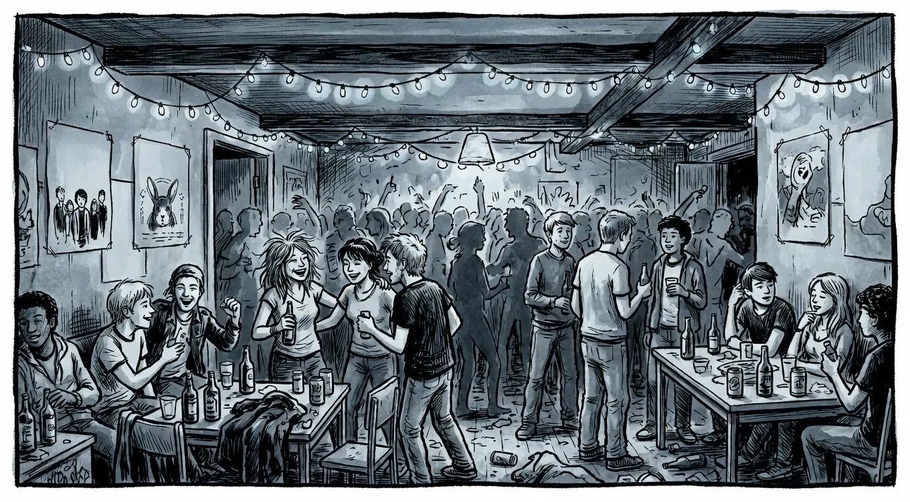
She finds it near the far wall. Two men, broad and confident and the particular kind of drunk that takes up space on purpose, have moved close to two others. Close enough to mean something. Not close enough to be undeniable. Not yet.
The first of the two being crowded is tall. American, she places it immediately from a single word she catches across the room, the vowels slightly too open for anyone raised here. He is standing very still in a way that is either fear or the exact opposite of it. She works out in seconds it is not fear. Beside him, shorter, British-Nigerian, jaw already set, is his friend. The friend has been ready since they walked in.
One of the two men steps slightly closer. Smiling.
Jack is already looking at the board.
A silence between them, the kind that carries a whole argument in four seconds, the way only old friends manage.
The crowd drifts over without deciding to. The two men throw first and they are good at this, solid scores, comfortable on a board they know well. The people watching make the noise of people who think they have already seen the best of the evening.
Jack steps up. Rolls his shoulders. First dart catches the inner ring. Good. Second dart misses, clean and undeniable. Third does better but still not enough. Jack steps back with the look of a man having a private argument with physics.
Oscar picks up his darts.
He steps to the line and stops. Does not shift his weight, does not roll his wrist, does not do any of the small rituals people use to tell themselves they are ready. He is just still. The way he is still at a desk at four in the morning. He looks at the board the way she has noticed he looks at things he is genuinely thinking about.
He throws his first dart.
Inner ring. Clean.
He picks up the second. Same pace, same stillness. Throws.
Inner ring. Again.
The crowd makes a sound, not cheering, more like the involuntary exhale of a room watching something settle into exactly the shape it was always going to take. Oscar picks up the third dart.
He throws.
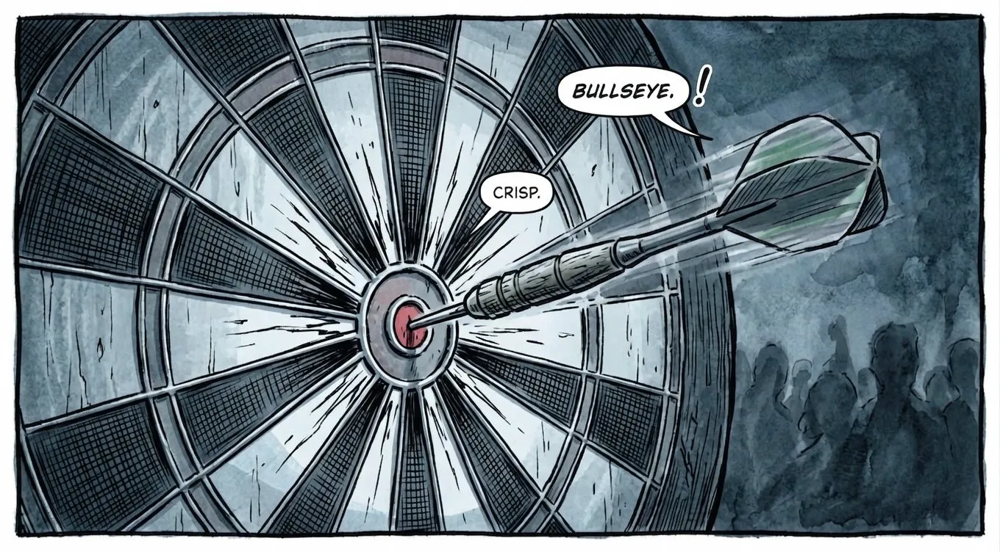
The two men look at the board for a long time. Then at each other. Then find somewhere else to be.
She finishes her drink. Sets the glass down. Crosses the room at her own pace, not rushing, because she has already decided where she is going.
He notices her coming. Does not change his posture or expression. Just waits, with the patience of someone who has a private understanding with time.
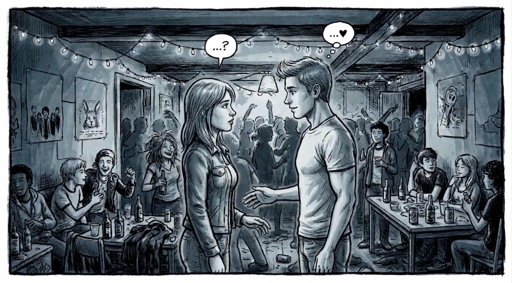
A pause that does not need filling.
He smiles. Small, private, the one nobody else gets. He does not know yet that she will be the only person who ever receives it. Neither does she.
But the universe, apparently, already had plans for them.
They did not swap numbers that night. They did not need to. The same library three days later. The same coffee queue twice in one week. A lecture she had no reason to attend and found him in the third row. A bookshop on Victoria Street on a rainy Thursday, where he was reading the exact book she had returned the week before, and they both noticed at the same moment, and neither spoke for a second, and then both spoke at once, and laughed.
That was the moment. That was when it became something.
Dinner that Friday. Then a long walk along the Water of Leith at midnight, no particular destination, the city quiet and lit orange around them. More dinners. More walks. Conversations that started in one part of Edinburgh and ended somewhere else entirely.
Three months in, one night, they slept together for the first time. Unhurried. Certain. The way things happen when two people have been circling something long enough that finally going there feels less like a decision and more like an arrival. It was the best night of her life. She did not say this out loud for another six months, and then only once, quietly, in the dark.
He enrolled in his PhD. Theoretical Astrophysics. Harwick University. She had other plans.
Felicia joined VEIL-9. British intelligence, a division so classified it has no public name, no press releases, and does not put its people in any database a civilian could find. She trained for eleven months. Passed at twenty-two. Youngest in her intake. She became very good at her job: controlled under pressure, precise when being imprecise could mean not coming home. She worked in cities she could not name afterward, in four languages, leaving no trace in rooms she was sent to enter.
And every time she came home, he was there. Reading. Making dinner. Not asking about the parts she could not share. Keeping the shape of their life steady while she moved through harder rooms.
She never asked him to do that. He never explained why he did.
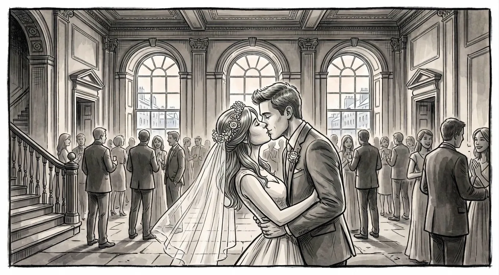
June. Both twenty-four. A restored Georgian hall in Edinburgh's New Town, tall windows and stone floors and everyone who mattered filling it. His family flew in from Chicago. His mother arrived in a dress the colour of deep amber that made the room feel warmer. Her mother had been crying since somewhere around Newcastle and was still going when the ceremony started. Her father shook Oscar's hand for a long time outside the venue, said very little, and meant a great deal.
Jack was best man. His speech was funny in the first half and sharper than anyone expected in the second. Near midnight they found a corner near one of the tall windows and stood there together without talking, looking out at Edinburgh in June, saying nothing.
That quiet moment was probably the best one of the whole night.
The photo on their mantelpiece shows them both mid-laugh at something the photographer said. Neither of them remember what it was. She is one month older. She has mentioned it forty-seven times.
A Tuesday. She found out and sat on the bathroom floor for twenty-two minutes, running through it the way she ran through operational decisions. Variables. What changes. How a life reorganises itself around something new at the centre of it. She came to no conclusion. So she went and told him.
He put his coffee down. Looked at her properly. Then stood, put both hands on her face, and said
She did one more month of active work, then resigned. Filed the commendation without reading it. Walked out of the building on a grey Tuesday morning and took the bus home.
She has not thought about VEIL-9 since. Or so she tells herself.
His car. The battered Volvo she has suggested replacing three times. He drives. She navigates. The city slides past — Old Town spires, wet cobblestones catching headlights, then the quieter southside roads, then Edinburgh starting to thin at its own edges.
She has her feet up on the dashboard. A habit he has given up fighting. He drums once on the steering wheel at a red light. She watches the rain on the window and thinks about nothing at all.
This is the last completely ordinary moment. Neither of them know that yet.
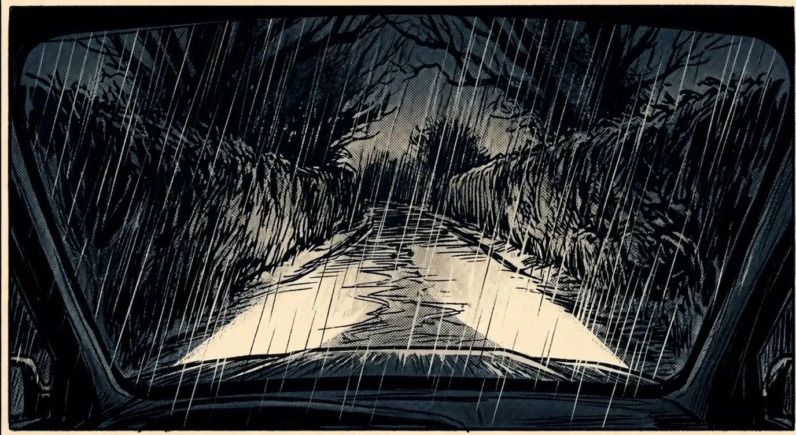
The road narrows. The city drops away completely. Only dark hedgerow on both sides, the sound of water hammering the roof, headlights finding twenty feet of road and nothing beyond. The map gives directions calmly. The rain is past inconvenience, into something that feels deliberate.
The road bends left. The Volvo does forty. He watches the white line. She watches the map. The reservation will be gone if they do not
A figure.
Standing in the road.
Not a car. Not an animal. A person.
Completely still. In the dark. In the rain.
Not caught off guard. Not frozen.
Waiting.
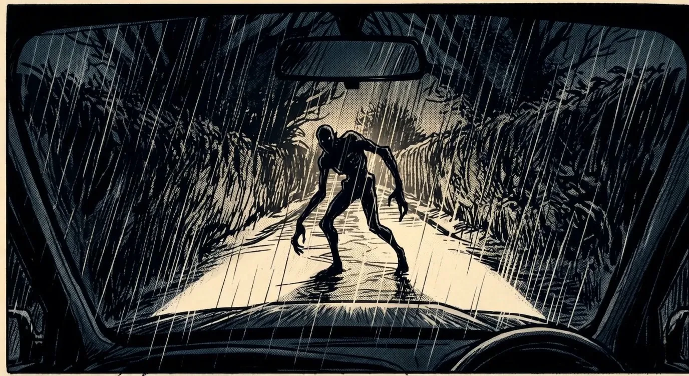
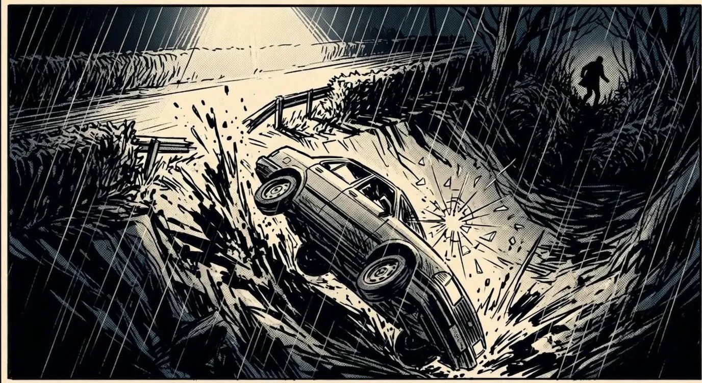
The shape of the car becomes something unrecognisable. Glass moves in slow motion the way it does when the mind cannot keep up with the speed. Gravity picks a new direction. The map continues, calm and precise, giving directions to a place they will not reach tonight.
She is conscious for
seconds. Long enough to turn her head.
Long enough to see him.
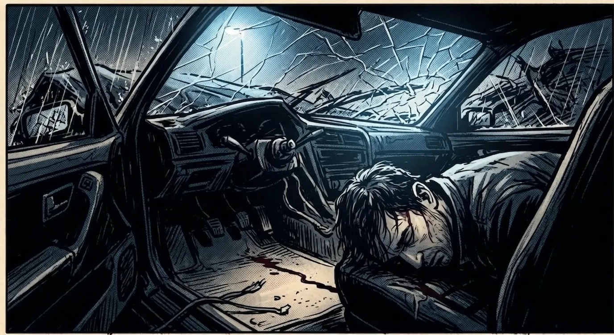
A shape. Against the steering column.
Still.
Limp.
Then nothing at all.